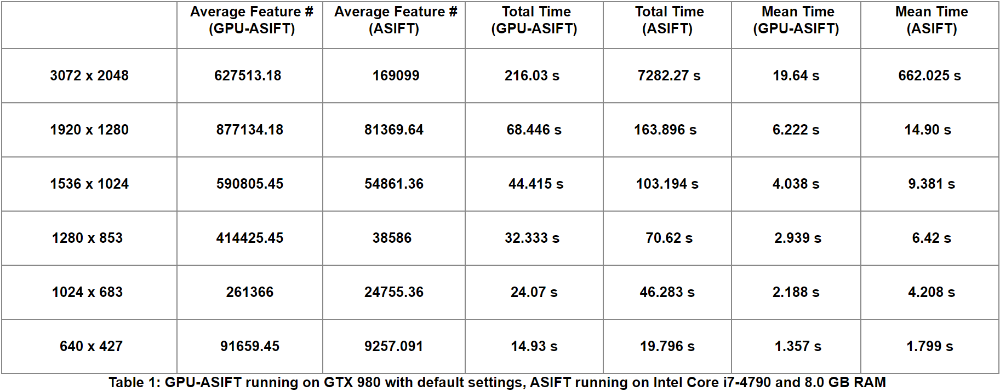

Fan Wang
Senior Software Engineer
Schnackel Engieers
Email: fanwang1 [at] cs.stonybrook.edu
I graduated with a Ph.D. in Computer Science from Stony Brook University in the summer of 2024. My thesis advisor was Prof. Chao Chen.
Before joining Stony Brook University, I completed my M.Sc. at the National University of Singapore under the supervision of Prof. Ying Sun.
I obatined my B.S. degree from Lanzhou University.
I worked at ADSC from 2013 to 2016, and later briefly joined Singapore University of Technology and Design and Vi Dimensions as a software engineer.
Research Interests
My research focus on computer vision, deep learning, topological data analysis, and parallel computations with GPU.
[CV] [LinkedIn]
[GitHub] [Scholar]
[Defense Slides]
Publications

TopoTxR: A topology-guided deep convolutional network for breast parenchyma learning on DCE-MRIs
Fan Wang, Zhilin Zou, Nicole Sakla, Luke Partyka, Nil Rawal, Gagandeep Singh, Wei Zhao, Haibin Ling , Chuan Huang, Prateek Prasanna, Chao Chen
Medical Image Analysis, 2024
[Paper]
[Code]

GPU Computation of the Euler Characteristic Curve for Imaging Data
Fan Wang, Hubert Wagner, Chao Chen
Journal of Computational Geometry, JoCG 2023
The journal version of our GPU Euler Characteristics Computation has been enhanced with additional experiments and various optimizations.
[Paper]
[Code]
GPU Computation of the Euler Characteristic Curve for Imaging Data
Fan Wang, Hubert Wagner, Chao Chen
38th International Symposium on Computational Geometry, SoCG 2022
[Paper]
[Code]
TopoTxR: A topological biomarker for predicting treatment response in breast cancer
Fan Wang, Saarthak Kapse, Steven Liu, Prateek Prasanna, and Chao Chen
International Conference on Information Processing in Medical Imaging (IPMI), 2021
[Paper]
[Code]
TopoGAN: A topology-aware generative adversarial network
Fan Wang, Huidong Liu, Dimitris Samaras, Chao Chen
European Conference on Computer Vision (ECCV), 2020 (Oral, 2.1%)
[Paper]
[Code]
Hierarchical image link selection scheme for duplicate structure disambiguation
Fan Wang, Aditi Nayak, Yogesh Agrawal, Roy Shilkrot
British Machine Vision Conference (BMVC), 2018
[Paper]
[Code]
CODE: Coherence based decision boundaries for feature correspondence
Wen-Yan Lin, Fan Wang, Ming-Ming Cheng, Sai-Kit Yeung, Philip H.S. Torr, Minh N. Do, and Jiangbo Lu
IEEE transactions on pattern analysis and machine intelligence (TPAMI), 40 (1), 34-47
[Paper]
[Code]
[Website]
Hardware Acceleration of Persistent Homology Computation
Fan Wang, Chunhua Deng, Bo Yuan, and Chen Chao
Medical Imaging and Computer Assisted Intervention (MICCAI) 2019, Workshop
[Paper]
Work Experience
Vi Dimensions, Software Engineer
Designed and implemented a CUDA accelerated GMM background subtraction system for video surveillance.

Advanced Digital Sciences Center (ADSC), Software Engineer
Developed CUDA Affine-SIFT (scale-invariant feature transform) detection module.

|